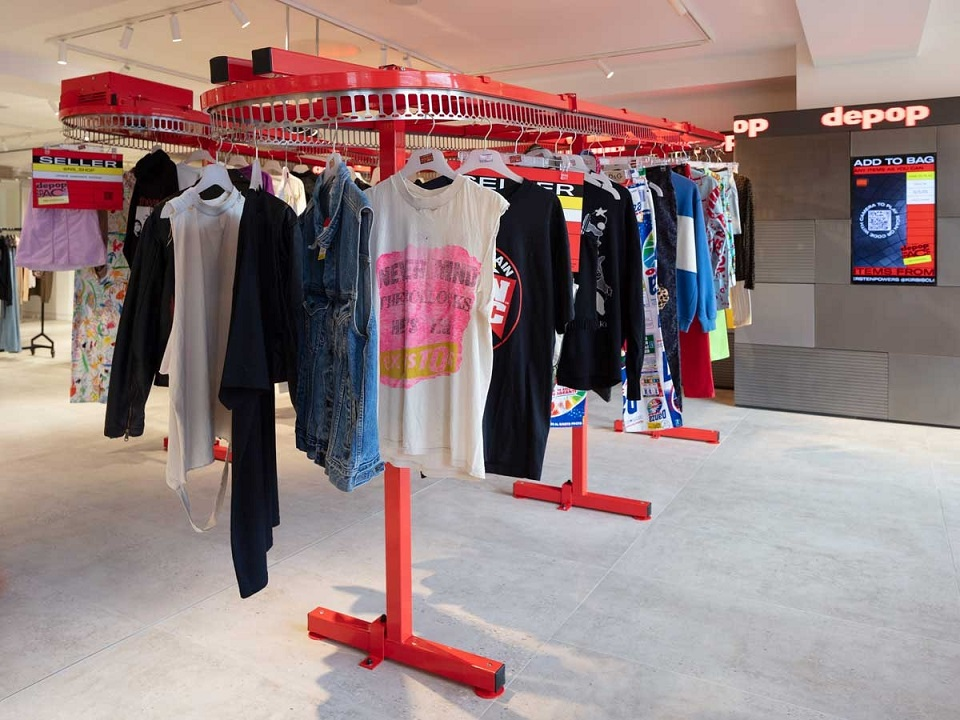

https://fashionunited.uk/news/retail/depop-opens-pop-up-store-in-selfridges/2019080644620
https://fashionunited.uk/news/retail/depop-opens-pop-up-store-in-selfridges/2019080644620
Designer items are much easier to lust after than afford. It’s common for items from you favourite elite brands to reach prices well over £500 and that’s difficult to afford, especially when you are a student. So lots of people are turning to buying second hand designer items rather than buying them new. This can be amazing because it means that you can buy items from your favourite brands for a much more affordable price. But it can also be risky, because you never know whether you are getting scammed until you receive your product, and by that stage, you have already paid for it… In this blog post, I am going to be talking you through some of the best places online to buy second hand clothes so that you can confidently buy designer clothes at a cheaper price.
Vestiaire Collective is one of the best places to buy second hand designer fashion, for a low price and low risk. This is because they authenticate the items before you receive them to make sure that they are genuine. For this service you have to pay an “authenticator fee” which is usually around £3 but is often free. You can view products from around the world so there is an endless selection of elite brands for you to choose from. The other day I was browsing Vestiaire Collective and I found an Alexander McQueen jumper, that had been worn twice, for only £110! Unfortunately it wasn’t my size but if it was I definitely would have treated myself. Vestiaire Collective is one of the best places to buy second hand designer clothes and the fact that they authenticate the product as well gives you a lot more confidence when treating yourself to a new piece.
 https://www.businessoffashion.com/articles/news-bites/vestiaire-collective-unveils-rebrand
https://www.businessoffashion.com/articles/news-bites/vestiaire-collective-unveils-rebrand
Online shops can be a great place to buy second hand clothes because they will authenticate the items and make sure that they are genuine. Some great examples of these shops that I use are Open Attire, Finettchi (who also have a physical store in Glasgow) and Allsorts . These shops have good reviews and a lot of social media followings, which means that you can trust when buying your fashion items. The only downside with buying products from these shops is that they are the middle men, so you will have to pay more for the item than if you bought it directly from the seller (like if you bought something on Vestiaire Collective). But it’s often better to pay a bit more money and buy from one of these stores because there is no risk that you are going to receive a fake item and you know that the condition of the product that they describe is the condition that you are going to receive.

Depop is a great place to buy cheap designer fashion at a very low price. The only downside to Depop is that there are a lot of people selling fake items and selling them as genuine. One of the best things about Depop is that you can use PayPal for your purchases. This is good because PayPal have a thing called buyer protection, this means that if you buy a product of Depop that claims to be 100% genuine, and turns out to be fake then PayPal will reimburse you. So before you buy a product on PayPal, make sure that you specifically ask whether the product is genuine and make sure that you screenshot their response for evidence in case anything goes wrong. With that being said, Depop has loads of trusted sellers, with amazing reviews meaning that most of the time you can fully trust that the item you have seen in the images is the item you are going to receive and you can get some amazing bargains from it.
 https://fashionunited.uk/news/retail/depop-opens-pop-up-store-in-selfridges/2019080644620If you loved this blog post, why not check out one of our other posts, which includes some of the best suits a man can buy! Read it here, Best Suits For Men
Second hand fashion is not only better for the environment, it is also better for your pocket because you can get some amazing pieces for a low price. There can sometimes be judgement in the designer fashion industry about buying second hand items but it can be a great way for people to get their first designer clothes and start their new wardrobe. I hope this blog post has been useful in telling you about the best places to buy second hand clothes and how to save yourself some money!
Author: Freddie Ratsma
Published: May 2020